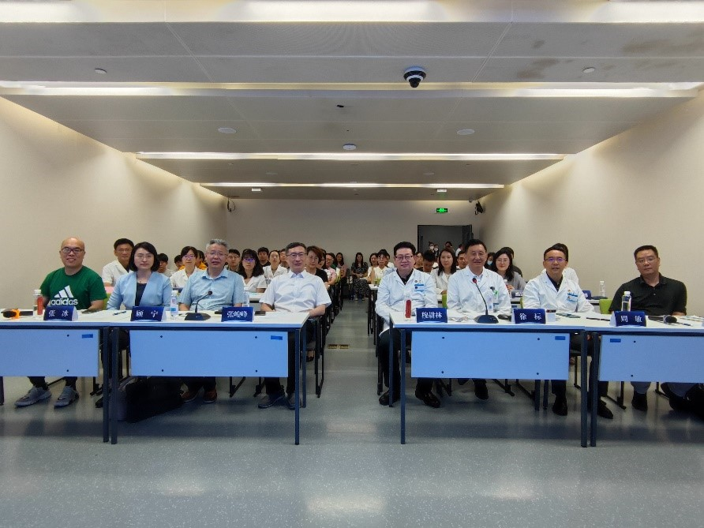

| 时间：2023/06/27 作者：赵一帆 | |||
江苏省前沿引领技术基础研究专项《智能化血管疾病评估模型建立和初步临床验证研究》课题启动会暨南京大学医学院附属鼓楼医院《江苏省血管信息工程重点实验室》筹建研讨会于2023年6月22日上午在南京鼓楼医院会议中心1号学术报告厅成功召开。 |
|||
| 出席会议的领导有南京大学党委常委、副校长张峻峰，南京大学医学院附属鼓楼医院（南京鼓楼医院）党委书记、院长穆耕林，南京大学医学院附属鼓楼医院党委副书记，医学影像科行政主任张冰。会议由纳米组顾宁院士与鼓楼医院徐标教授联合召集，徐标教授主持。 | |||
| 会议首先由顾宁院士致辞，顾院士简单介绍了课题的概况与省重实验室筹建的初衷，并向各位领导和与会人员表达感谢；穆耕林书记在致辞中表达对本项目顺利启动与推进的祝贺与对筹建省重实验室的支持。张峻峰副校长在致辞中高度肯定了近年来鼓楼医院的工作，并表达了南京大学对于筹建省重实验室的大力支持。 | |||
|
|||
随后，康丽娜副主任、徐标主任与顾宁院士先后介绍了“课题整体情况”、“南京鼓楼医院心血管内科情况”与“江苏省血管信息工程重点实验室筹建设想”。 在研究性报告环节中，纳米组博士生严森做了题为“磁性间充质干细胞球的制备及血管再生应用研究”的专题报告。纳米组助理研究员毛宇做了题为“纳米氧化铁在心血管疾病诊疗中的应用”的专题报告。 |
|||
| 东南大学、南京大学、南京大学附属鼓楼医院与南京医科大学的相关老师及同学也参加了此次会议。 | |||
 参会人员合影 |
|||
| 转载自：https://lbmd.seu.edu.cn/nano/info/1016/4211.htm | |||